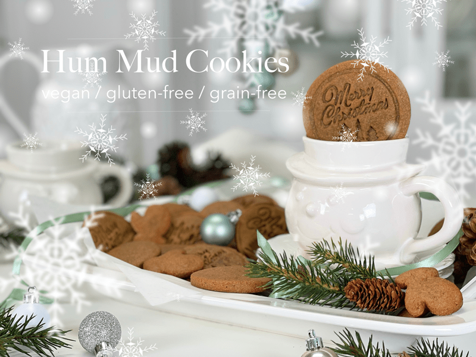
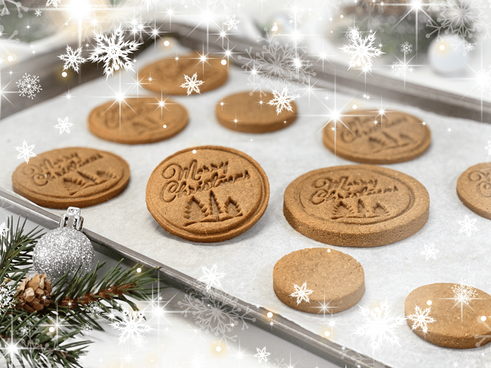

Hum Mud Cookies | Baked, Vegan, Gluten-Free, Grain-Free
I have been making Hum Mud cookies for Bob for over ten years now and every year when I pull the recipe out, it never fails me. The warming flavors of cinnamon, ginger, cloves, and molasses complement the firm exterior and chewy center of the cookie. It’s a wonderful culinary explosion. This recipe is gluten-free, grain-free, and vegan. Even if you don’t avoid gluten, grains, or eat vegan… you can expect to thoroughly enjoy these cookies, one bite at a time.

So I guess we should start out with…have you ever heard of Hum Muds? I have a “raw/dehydrated” version which can be found (here) where I share Bob’s personal connection with these delicious cookies but I will quickly touch base here on were they originated. They were made at Girard College in Philadelphia, Pennsylvania, which was a completely self-sufficient live-in school for boys (back then) that was built according to the will of Stephen Girard, who at the time was known as the richest man in America. In his will, Girard directed the city of Philadelphia to use his money to build a boarding school for poor, orphaned, or fatherless boys so that they might be prepared for the trades and professions of their era. Girard College opened its doors in 1848.
The school was known for their wonderful ginger cookies that the students called HUM MUDS. I recently looked up the college and they don’t appear to be making or selling them anymore. So I am here today to keep the tradition moving forward.
The recipe that I designed is NOT the original Hum Mud recipe since we are vegan and gluten-free, but I feel that I came pretty close. Bob is my official taste tester since he grew up with his mom baking them for him, and when she wasn’t in the kitchen with flour flinging everywhere, they would order them from the college as a special treat. Bob’s dad attended there and often spoke highly of his time spent there.
So, when the holiday season rolls around, the first request I get from Bob is HUM MUDS! For years I made them raw, “cooking” them by using a dehydrator, keeping the temperature at 115 degrees (F). But I often get emails asking me if certain raw recipes can be baked, for foodies who either don’t have a dehydrator or aren’t eating raw. So I took the same recipe I designed and tested them out in the oven. They turned out perfect without having to make adjustments to the recipe.

Cookie Tips and Tricks
Cookie Shapes
- You can simply create round dough balls and flatten them with the palm of your hand to create a cookie shape.
- Alternatively, you can roll the dough out between two sheets of parchment paper and cut out shapes with cookie cutters. If you use cookie cutters, I found that cleaning the edges of the cookie cutter with water every so often helped the cookies release from the cutter.
Baking
- The length of time they require to thoroughly bake will depend on how thin or thick you make them.
- The cookies lighten in color as they bake, going from a deep brown to a golden brown.
- Don’t rely on the edges of the cookies to turn dark brown while they are baking as an indicator that they are done. I found that if I waited for the edges to turn color, they had already over-baked.
- The surface of the cookie, once baked, will be firm to the touch, but the inside will be a little chewy.
I wish you all a wonderful holiday season. Do you have a favorite holiday cookie? If you do, please share below! blessings and love, amie sue
 Ingredients:
Ingredients:
Yields 9 (1/4 cup) cookies
- 3 cups (335 g) fine almond flour
- 1/4 cup (43 g) coconut crystals
- 1 tsp (2 g) ground Ceylon cinnamon
- 1/4 tsp (1 g) ground cloves
- 1/4 tsp (1 g) ground ginger
- 1/2 tsp (3 g) sea salt
- 1/4 cup (86 g) unsulphured blackstrap molasses
- 1 Tbsp (10 g) olive oil or coconut oil, melted
- 2 Tbsp (30 g) water
Preparation:
- Preheat the oven to 350 degrees (F), set the rack to the middle of the oven. Line a baking sheet with parchment paper and set aside.
- In the food processor fitted with the “S” blade, combine the almond flour, coconut crystals, cinnamon, cloves, ginger, and salt. Process together, making sure all the spices are distributed.
- Add the molasses, coconut oil, and water. Process until it forms a thick dough ball as it spins about the food processor.
- Using 1/4 cup cookie scoop, level off each scoop, roll it into a ball in the palms of your hands, and flatten it.
- Alternatively, if you wish to use cookie cutters, you can roll the dough out between two pieces of parchment paper. If you use cookie cutters, it’s helpful to clean them after every few cookies, otherwise they get sticky and the dough won’t release.
- Place the cookies on the cookie sheet. They can be fairly close together, since these cookies don’t spread while baking.
- Slide the baking sheet into the oven and bake for 10-12 minutes.
- The length of cooking time will depend on how thick or thin you made the cookies. I suggest setting the timer for 8 minutes and continuing to check them until done. Document the time it took for next time.
- The cookies will look slightly puffed up (but not too much), the color lightens, and they are dry to the touch.
- When they are done baking, place the pan on a cooling rack until they are cool. They will be firm on the outside but chewy on the inside.
Storage
- These cookies can be stored on the counter for up to a week, longer in the fridge, and up to 3 months in the freezer.
- Be sure to use an airtight container, and if you freeze them, use a freezer-safe bag/container.
© AmieSue.com